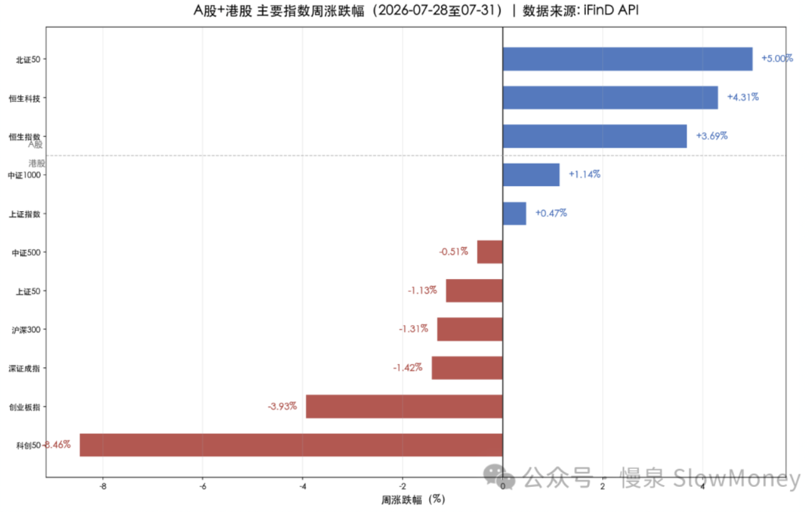
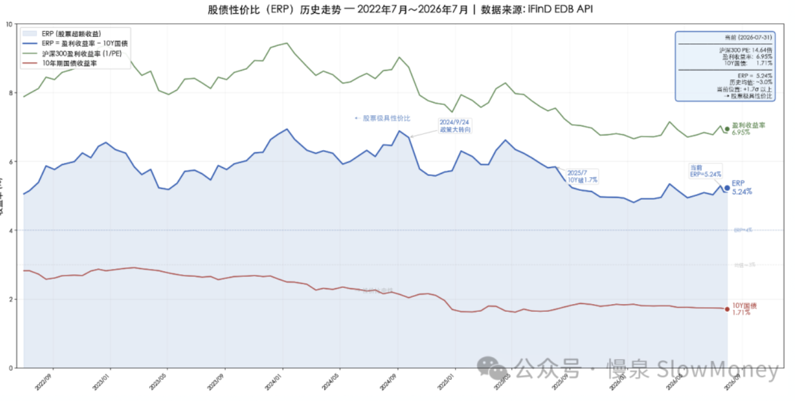
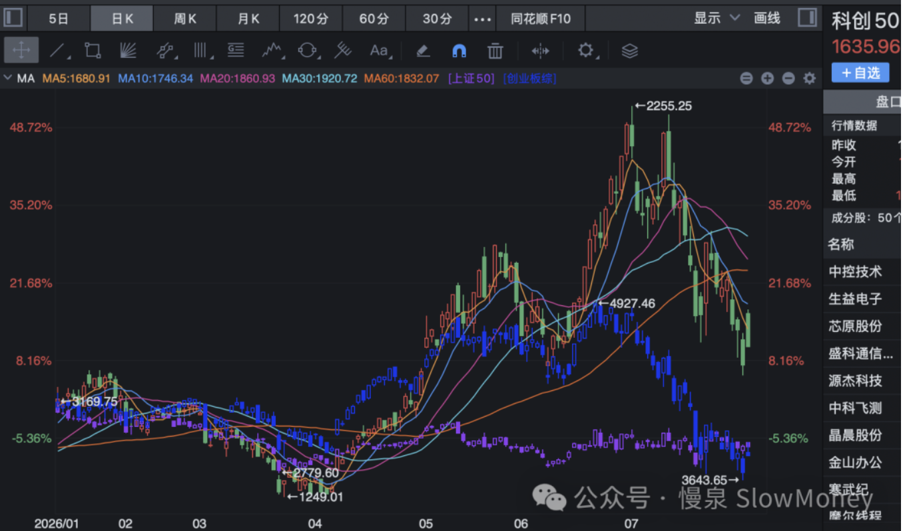

投资备忘20260801-你站在哪里？
2026-07-27 — 2026-08-01 · W31 · 周度备忘（补档）
6 月有个很火的段子——"要站在光里""不要光站在那里""更不要光着站在那里"，不断传播。7 月份过去了，不少人变成了"光着站在光里"。实际上无论是站在光里还是不站在光里，并没有那么重要，关键是"不要光着站在光里"，因为会被所有人看到。你猜对了，说的是韩国股市。
你站在哪里？
你需要站一个地方，因为投资必须有观点，无论是短期的还是长期的。投资是对基本面、市场资金理解的变现，观点的不同甚至分歧很正常，也正是这种多样性孵化出复杂的生态——所谓猫有猫道、狗有狗道。
社交媒体效应。社交媒体没有这么发达之前，投资传播更多是赚了跟身边人吹吹牛，亏了打碎牙往肚里咽；现在通过社交媒体的讽刺、挖苦、炫耀，很多将对手方刻画成 SB——理论上应该没有人愿意当 SB，即便短期也不行。逐步演化成一种社交语言霸凌："光站在那里、光着站在那里"，下一步就是服从、狂欢。
在响亮口号面前，其实群体无意识。历史无数次证明，乌合之众是一种生存状态。
当你站错了地方。实际上投资你很难总是站对地方。就像最优雅、最具统治力的费德勒，职业生涯 1526 场比赛赢下其中的 80%，但是得分率只有 54%——输的时候输得好，才能保证 20 个大满贯。投资中站错的时候保持耐心、自我更新和自信；站对的时候享受、阶段总结和警惕。之前有个人说过：
Rejoice in hope, Patient in tribulation.
市场情况
本周市场指数震荡、交易逐步放大、个股表现精彩。沪深 300 下跌 1.3%，中证全指下跌 -0.1%，恒生科技上涨 4.3%，但是全 A 的涨跌幅中位数 +5.24%，与全指分化 5.35%——核心原因是重科技股暴跌拖累加权指数（科创 50 -8.46%、创业板 -3.93%、沪深 300 -1.31%），但多数中小市值股票全周收涨（小盘价值 +3.54%、中证 1000 +1.14%、北证 50 +5.00%）。这是典型的"指数不跌但股票不亏"行情，跟 6 月份形成巨大反差。
| 指数 | 本周涨跌幅 |
|---|---|
| 北证 50 | +5.00% |
| 恒生科技 | +4.31% |
| 恒生指数 | +3.69% |
| 中证 1000 | +1.14% |
| 上证指数 | +0.47% |
| 中证 500 | -0.51% |
| 上证 50 | -1.13% |
| 沪深 300 | -1.31% |
| 深证成指 | -1.42% |
| 创业板指 | -3.93% |
| 科创 50 | -8.46% |
| 全 A 涨跌幅中位数（指数不跌但股票不亏） | +5.24% |

市场结构：AI 应用、白酒地产等低位资产、银行中药电力分红资产表现较强；科技相关的存储和光模块跌幅继续。
市场分析：
- 电子单一行业持仓突破 40% 是根源：超过 20% 经验上限两倍，微观结构极度脆弱。周二韩国 KOSPI -10.84% 成为导火索 → A 股 AI/半导体遭遇流动性踩踏（科创 50 周四跌至 1,588 低点）→ 周四道指暴跌 1100 点二次引爆 → 周五微软 Azure +43% 暴力修复。本质上是一次"拥挤交易的清算 → 超跌反弹"的完整周期。周一科技成长一度普涨 +3%，说明当时市场尚未意识到拥挤持仓的风险烈度；
- AI 内部出现极致劈叉：AI 应用端（游戏 +11.73% / AI 应用概念 +9.83%）与 AI 硬件端（通信设备 -12.24% / 半导体 -11.42%）之间出现超过 24pp 的周度劈叉。核心逻辑：AI 硬件前期拥挤度过高（电子持仓 40%+）→ 清算是主旋律；AI 应用端前期涨幅温和 → 周五成为反弹主攻方向。微软 Azure +43% 验证了 AI 商业化的"应用端"，而非"硬件端"；
- 银行创历史新高是本周最具信号意义的事件：工商银行 / 建设银行周四创历史新高——在市场最恐慌的时刻，资金不是离场观望，而是涌入银行避险。银行板块四大子行业全部进入申万二级涨幅前十，这是典型的"Risk-Off"信号；
- 周五"一日反转"的脆弱性：周五 4,685 只个股上涨 / 25,420 亿成交的暴力反攻，主买力量来自海外映射（微软 + 费半）而非内生催化。银行 -1.38% / 食品饮料 -0.55% 同步获利回吐，说明周五的本质是"避险资金短暂回流成长"而非"系统性风格切换"。在 30Y 美债 5.2%+ 未变、美联储未降息的背景下，科技股反弹的持续性存疑。
市场展望
当前的市场需要量、需要时间，二者至少一个出现变化才行。当前市场的企稳的前提条件就是时间或者更大的波动，震荡的时间可能延长，这种情况下，弹性谨慎抄底、结构再次占优。绝对收益继续谨慎，相对收益对于高位资产继续谨慎，找新红利。
性价比推升红利资产的配置。国内低利率使得沪深 300 的 ERP 仍然在相对高位，也就是说资金配置蓝筹相对理财收益的性价比仍然突出。

政策面：会议开了个寂寞。
基本面：PMI 49.2 回落至收缩区间，但 H1 工业企业利润 +18.7%（电子 +96.9%），结构极度分化——"总量弱、结构强"的 K 型格局延续。
组合备忘
Beta 组合表现继续跑赢市场（市场指 Wind 全 A 指数），Macro 同样。组合仓位下降：在红利上涨阶段部分弹性较大的仓位削减。Beta 策略仓位 76%，Macro 策略仓位持平 63%（其中转债 24%），整体保持谨慎。组合的表现主要受到以下因素影响：
- 风格连续第五周对组合正贡献：红利资产本周表现更强，资金布局的效应更明显；HALO 资产表现稳健；
- 机器人智驾产业基本稳定；
- 科技小幅下跌，坚持交易思维，本周对组合影响不大。
| 类别 | 仓位 |
|---|---|
| Beta 策略（红利上涨阶段削减弹性较大仓位） | 76% |
| Macro 策略权益仓位（含转债 24%，整体保持谨慎） | 63% |
Beta 继续跑赢市场 · Macro 同样跑赢 · 周度涨幅不再公开播报
操作和思考：本周的主要操作是降低了红利资产中（地产）资产的占比，对会议预期的交易部分兑现；科技继续做交易；小幅增加了 HALO 资产。
科技和红利分分合合进行到什么阶段？科技 5、6 月份的暴涨，7 月份的下跌，造成的指数走势巨大分化，运行到现在有几个判断：
- 基本面上，指数层面的从分到合基本完成：走势反映了基本面的变化，消费等资产业绩和科技板块业绩的差异反映了 20% 附近的指数差异，其中创业板指数已经回到了上证 50 指数下方；
- 交易结构和资金结构还有差异，仍然需要时间：类似 2015 年过犹不及；
- 未来弥合分化的方式：可能继续 7 月份的模式——一个震荡下跌、一个上涨；同时下跌的概率在增加不是下降：市场经历科技上涨拉开分化差距，科技下跌红利上涨弥合差距，同时下跌则科技更快下跌再次弥合分化。
再次分化？

下一步：市场需要时间和波动消化资金结构，在这之前仓位维持当前不高于 80%，聚焦结构、灵活交易、控制仓位的策略。
- HALO 资产：布局新的资产，继续加深理解和研究。标准是全球需求定价、下游新需求高增、产能受限，市场定价合理；
- 红利资产：短期的强势以止盈为主，需要寻找新标的；
- 市场超跌阶段的超跌科技股：在市场下跌阶段要有同情心，但反弹坚决卖出，交易型仓位定位。
上期钩子的答案：① 政治局会议 + 议息定价方向——政治局"开了个寂寞"，美联储未降息、30Y 美债 5.2%+ 未变，外部定价困局未破，科技反弹持续性存疑；② 红利更新持仓执行——兑现：降低红利中地产占比、会议预期交易部分兑现，短期强势以止盈为主找新标的；③ 执两用中杠铃表现——风格连续第五周正贡献，红利 + HALO 的杠铃继续有效，Beta 降至 76%（上限从 82% 收窄至 80%）；④ 内外需剪刀差——未收敛：PMI 49.2 落入收缩区间，但 H1 工业利润 +18.7%（电子 +96.9%），"总量弱、结构强"K 型延续。新钩子：① 科技与红利分合的三个判断——弥合方式（一起下跌科技更快）与"再次分化？"的验证；② 量与时间二者的变化触发条件；③ HALO 新资产标准（全球需求定价、下游新需求高增、产能受限、定价合理）的落地；④ KOSPI 拥挤清算是否传染结束。对账窗口：2026 年 8 月中旬。